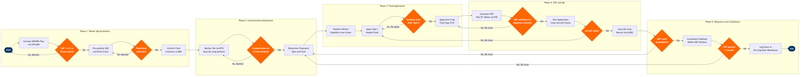

| Step | L4 Step Name | KPI / Target | Pain Point / Risk | Gate |
|---|---|---|---|---|
| 1.1 | Activate Winter Operations Plan via AMS | Activation lead time >= 2 hours before first affected departure; 100% crew acknowledgement within 15 min | Late NOTAMs or rapidly developing weather compress the activation window; insufficient crew briefing time during sudden temperature drops leads to unprepared ground teams | ⚠ |
| 1.2 | Pre-Position De-icing Equipment and Brief Crews | Equipment readiness >= 30 min before first scheduled de-icing event; all crew holdover time (HOT) training current within 12 months | GSE unserviceability during peak winter events reduces available truck count with no redundancy at smaller stations; crew HOT training currency lapses go undetected until seasonal activation | |
| 1.3 | Confirm Fluid Inventory and Type Availability | Fluid stock >= 120% of estimated daily requirement; reorder threshold: 40% remaining; no event aborted due to fluid shortage | Type IV fluid supply chain disruptions during extended winter events common at capacity-constrained stations; airports with limited glycol storage cannot buffer multi-day storm events | ⚠ |
| 2.1 | Monitor Real-Time Weather and Issue De-icing Advisory | Advisory issued within 10 min of METAR update confirming frozen precipitation; advisory accuracy vs actual ramp conditions >= 90% | Rapidly changing precipitation type (freezing rain transitioning to snow) invalidates HOT mid-event; DTN update latency vs real-time ramp microclimate conditions can lead to under- or over-treatment decisions | ⚠ |
| 2.2 | Conduct Aircraft Contamination Walk-Around Inspection | Inspection completed within 5 min of aircraft block-in; 100% of critical surfaces (wing leading edge, ailerons, elevator, rudder, pitot tubes) checked | Crew access to tail surfaces restricted at narrow-body gates without elevated stands; time pressure from tight turnarounds causes rushed inspections that miss contamination on aft fuselage or horizontal stabiliser | ⚠ |
| 2.3 | Determine De-Icing Treatment Type and Fluid Selection | Treatment type decision within 3 min of inspection completion; fluid selection compliant with SAE AMS 1424 (Type I) and AMS 1428 (Type IV) specifications | Crew chiefs without current SAE HOT table training select incorrect dilution ratios, overestimating holdover time and creating latent safety risk; audit trail for treatment decision not captured in all DMS implementations | |
| 3.1 | Position De-icing Vehicle and Establish Cockpit Communication | Spray basket clearance >= 1 m from aircraft surface at all times; positioning complete within 3 min of vehicle arrival at stand | Ramp congestion at hub airports delays vehicle access to stand; ATC-mandated de-icing pad queuing adds 15–20 min to turnaround during peak demand; inadequate ground lighting at night complicates safe vehicle positioning | |
| 3.2 | Apply Type I Heated Fluid — Active Contamination Removal | All critical surfaces clear of contamination after Type I pass; fluid temperature >= 60°C at application point; fluid waste rate < 5% through overspray | Very low OAT (<-15°C) reduces Type I heated fluid effectiveness, requiring multiple passes and extending turnaround; excessive Type I application increases glycol runoff requiring EPA/Transport Canada environmental reporting | ⚠ |
| 3.3 | Apply Anti-Icing Fluid (Type II/IV) for Holdover Protection | Application completed within 3 min; fluid start time logged to second-level accuracy for HOT calculation; coating uniform per SAE AMS 1428 visual check | Type IV fluid viscosity at OAT < -14°C reduces flow-off performance on wing surfaces, requiring switch to Type III or abandoning anti-icing and increasing re-treatment frequency; operators must carry multiple fluid types adding storage and logistics complexity | |
| 4.1 | Calculate Holdover Time from FAA/TC Tables via EFB | HOT calculation completed within 2 min of anti-icing fluid application start; communicated to captain before pushback clearance request; zero cases of HOT communicated after pushback initiation | FAA/TC HOT tables are conservative estimates; actual holdover time reduced by wind, direct sunlight, taxiway delays — flight crews must perform independent pre-departure contamination check but training and procedures vary by airline; EFB app connectivity failures force manual table lookup | ⚠ |
| 4.2 | Conduct Post-Application Clean Aircraft Inspection | Inspection covers 100% of critical surfaces; completion within 5 min of fluid application finish; re-treatment rate < 8% of treated aircraft | Inadequate ramp lighting during night ops or heavy snowfall reduces visibility for post-application inspectors; incorrect clean aircraft calls are a primary de-icing safety risk (referenced in multiple NTSB and TSB accident reports); no standardised photographic evidence requirement at most carriers | ⚠ |
| 4.3 | Issue De-Icing Completion Record and Transmit to Flight Crew | Report transmitted >= 5 min before pushback; 100% compliance with FAA pre-takeoff contamination check communication requirement; zero ACARS transmission failures without verbal backup | ACARS data entry errors under time pressure cause incorrect HOT communication to crew; regional and charter operations rely on verbal communication with no digital audit trail, creating regulatory exposure; captains not trained to question HOT plausibility against observed conditions | |
| 5.1 | Coordinate Pushback Within HOT Window | Departure initiated >= 5 min before HOT expiry; on-time departure rate (D0) >= 78% during active winter ops; zero aircraft departing with documented expired HOT | ATC sequencing delays during high-demand winter events push departures beyond HOT expiry, requiring return to pad for costly re-treatment; airlines report 18–25 min average re-treatment penalty per aircraft during peak de-icing, cascading across the departure bank | ⚠ |
| 5.2 | Monitor Departure Queue for HOT Expiry and Re-Treatment Triggers | Re-treatment decision made >= 10 min before HOT expiry; zero aircraft cleared for takeoff with expired HOT; re-treatment throughput capacity >= scheduled de-icing volume + 20% buffer | Simultaneous HOT expiry across multiple aircraft during heavy snowfall creates ramp congestion and cascading departure delays; single de-icing pad airports cannot handle re-treatment surges without significant schedule disruption; AMS does not natively flag HOT expiry without custom integration | ⚠ |
| 5.3 | Log De-Icing Event Data for Compliance and Performance Analysis | 100% of de-icing events logged within 24 hours; fluid waste rate < 5% of applied volume; regulatory audit trail completeness >= 99.5%; glycol runoff report submitted to EPA/Transport Canada within 30 days of season-end | DMS data silos prevent automated correlation with on-time performance and maintenance data, limiting root-cause analysis; EPA and Transport Canada glycol runoff reporting requirements vary by airport and add manual compliance burden; data quality issues in DMS (manual entries, missing fields) degrade seasonal analytics |